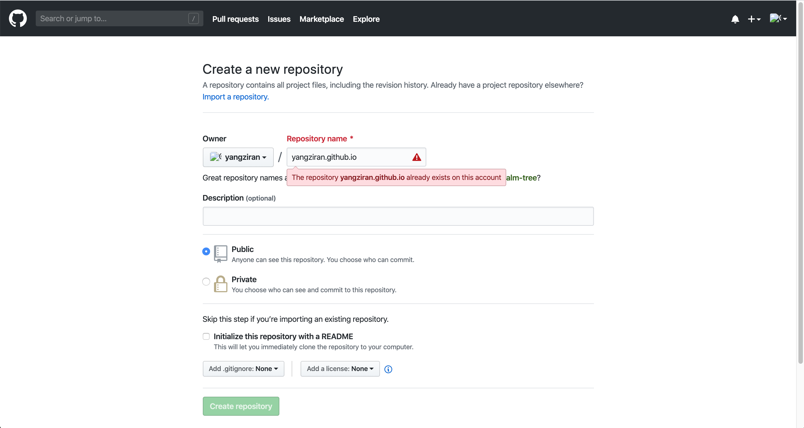

如何利用Github Pages和Hugo搭建个人博客？
Github Pages 和 Hugo 是什么？
Github Pages 是一个静态站点托管服务，直接将个人、组织或项目的页面托管于Github仓库中。 Hugo 是一个用Go语言编写的静态站点生成器，它针对速度、易用性和可配置性进行了优化，快速灵活。
还有其他选择吗？
Jekyll、Hexo、Middleman等，这里不做过多说明。
接下来，看看如何一步一步地位自己搭建一个博客！
- 注：以下步骤以在MacOS上的操作为例，其他操作系统类似，只是一些工具和命令有区别。
第0步：安装Git、Go并学习
第1步：新建一个Github库
- 1、注册一个Github账号。如果你已有账号，直接登录，如果你没有账号，注册并登录。
- 2、打开Github Pages官网，浏览并了解User or organization site补发对应的操作步骤。 Github Pages：https://pages.github.com
- 3、新建一个Github repository，库名为username.github.io，username即你的Github账号username。新建repository：https://github.com/new，作为博客内容发布仓库，权限需要为 public。
- 4、创建另外一个Github repository，库名随便取，这里就以blog命名，作为博客源码管理仓库，权限可以为private。

- 注：一个账号只能有一个username.github.io仓库，我这里已经创建了就不能再创建。
第2步：安装Hugo
- 1、浏览Hugo官方的安装指南进行初步了解，安装与你的操作系统对应的必要工具。
Hugo安装指南：
-
2、源码安装Hugo实例，源码方法适合所有平台
在安装 Hugo 之前，先配置好 Go 的环境变量以及代理：
// 配置环境变量 export GOPATH=$HOME/go // 需要根据自己操作系统配置 // 配置代理 go env -w GO111MODULE=on go env -w GOPROXY=https://goproxy.cn,direct // 参考：https://goproxy.cn安装Hugo
go get -v github.com/gohugoio/hugogo get 将会获取 Hugo 以及所有依赖到你的 $GOPATH/src 目录，同时编译所有代码生成最终的 hugo （或 hugo.exe）二进制文件，这就全部准备好了
你可以使用 -u 参数执行 go get 来更新 Hugo 的所有依赖
go get -u -v github.com/gohugoio/hugo
第3步：新建一个Hugo网站
- 1、进入你想存放 Hugo 网站的目录。
- 2、执行以下命令新建一个 Hugo 网站。
hugo new site yangziran.github.io // 'yangziran.github.io' 是我网站文件夹名。此时，会生成一个 yangziran.github.io 文件夹，
第4步：选择并克隆主题
- 默认的 Hugo 是不带任何主题的，你可以在官网上 下载 很多免费开源的主题，基本上所有的主题都会自带安装方法，并且每个主题的 config 配置文件基本是不一样的
git submodule add https://github.com/AmazingRise/hugo-theme-diary.git themes/diary - 然后修改 config.toml 或 config.yaml 增加一行
theme = "diary" // diary 是我选择的主题文件夹的名称 - 然后使用 hugo server –buildDrafts -w 即可访问 http://localhost:1313/ 查看本地安装好的Hugo
第5步：编辑配置文件
- baseURL 即为你博客的域名，如果有自己的域名并且打算使用其访问，就在这里填上准备好的域名并且到 Github 上的仓库 Settings 的 Custom domain 填上 baseURL 中的内容并保存，建议勾选上 Enforce HTTPS；如果没有自己的域名，那就填上 youname.github.io（仓库名称）
- title 即为你博客的标题
- 其他配置请自行参考你所选择的主题配置
第6步：新建一篇文章
- 发布文章或页面的命令为
hugo new posts/new-post.mdnew-post 为文章或页面的名字，也可以采用时间戳命名: hugo new posts/$(date +%s).md
- 然后编辑 content/posts 目录下的 .md 文件，使用 Markdown 语法写文章
第7步：本地预览网站效果
-
本地预览网站的命令为
hugo server --buildDrafts -w–buildDrafts ：生成被标记为【草稿】的文档
-w ：监控更改，如果发生更改直接显示到博客上
第8步：构建Hugo网站
- 在生成你的静态网页前，先将文章的 draft 改为 false
- 然后在 youname.github.io 目录下执行 hugo
- 此时所有生成的 HTML 文件都放在 youname.github.io/public 目录下
第9步：将网站目录转换为Git库
- 在这里会初始化 youname.github.io 和 public 两个 Git 仓库，并将 public 仓库添加为 youname.github.io 子模块
git init cd public git init git add . git commit -am "first commit" cd .. git submodule add https://github.com/youname/youname.github.io.git git add . git commit -am "first commit"
第10步：关联远程库并推送代码
```
git remote add origin https://github.com/youname/blog.git
cd public
git remote add origin https://github.com/youname/youname.github.io.git
git push -u origin master
cd ..
git push -u origin master
```
之后如何添加一篇博客
1、新建一篇文章，编辑内容
2、本地预览网站呈现效果
3、构建Hugo网站
4、提交修改至Git仓库并推送到Github
参考：
- Git：https://git-scm.com/book/zh/v2
- Github Pages：https://help.github.com/cn/github/working-with-github-pages
- Hugo：https://gohugo.io/documentation/
Last modified on 2020-03-23